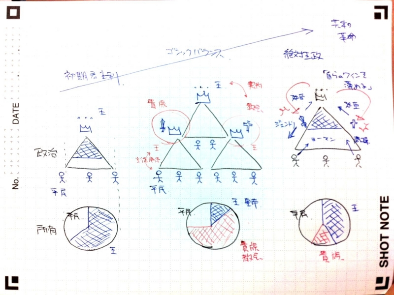

ゴシックバランス
執筆日時：
原意は「ゴート人の」を意味する言葉である。ルネサンス期の15世紀-16世紀に、イタリアの美術家アントニオ・フィラレーテやジョルジョ・ヴァザーリらが、中世時代の美術を粗野で野蛮なものとみなして、「ドイツ風の」あるいは「ゴート風の」と呼んだことに由来する蔑称である（ゴート人が実際に用いていた美術様式という訳ではない）。中世の教会建築、絵画などの様式を示す概念になっていった。
ルネサンス期以降、ヨーロッパでは古代ギリシア・ローマの美や文化が理想とされ、暗黒時代とされた中世の文化には低い評価が与えられてきた。
支配は財産を基礎とする
ジェームス・ハリントンは、「ハリントンはそれ（マキァヴェリの政治哲学）を継承しつつも、“古代”と“近代”はいっしょくたにできない、全然構造が違う、マキャヴェリはそれに鈍感すぎると考えていた」（権威と権力 - だるろぐ）。では、ハリントンが考えていたモデルとはなにか。それは、経済が政治を決定するという理論だった。
支配は財産を基礎とする。暴力や詐欺によって統治が変わることはありうるとしても、当地を基礎づけ、かつ永続化させるのはまさに財産である
この言葉は、ハリントンの盟友ネヴィル*1のものだけれど、ハリントンの考えをうまく表していると思う。マルクス風に言うと「上部構造と下部構造」ってな感じになるのだろうか。
なお、この考えにもとづいた政体分ついについては、前にまとめた（ハリントンの政体分類 - だるろぐ）。
ゴシックバランス

ながなが書くのが面倒になった。要はこういうことだ！
ゴシックバランスとは、封土制（feud）*2と家臣制（vassalage）を二大支柱とした中世社会の政治制度、つまり封建制度のことを言う。この制度は、西洋と日本でしか見られなかった*3。
簡単に言うと、領主と主従関係を結んだり、征服したり（この場合は帝国になるだろう）して、権力がヒエラルキーを成したのが“ゴシックバランス”だ。ゴシックバランスにおいては、その頂点をなす皇帝・王が、末端の人民へ直接命令することはできない。あくまでも貴族・教会（領主）を通じてのみ命令が可能（媒介・委任・委譲）で、人民も皇帝・王への帰属意識をもっていない。
そこで王は、さまざまな改革を通じて貴族階級の力を弱め、むしろ当時勃興しつつあった商工業階級や地主階級と直接繋がろうとする。たとえば、定住法*4、家臣・領民法*5、土地譲渡法*6といった反封建政策を行う。また、教会に対しては修道院の解体政策を進め、その財産の国有化を進めた。
こうした政策によって、王は直接人民を治めることに成功した（絶対王政）が、それは自分の「ワインを薄める」ことでもあった。つまり、王は“権威”によって成るにもかかわらず、その“権威”そのものを薄めてしまった。新たに台頭した人民階級（近代的市民）は私利私欲を肯定する“自由経済”に依拠しており、封建的な“権威”を認めない。エリザベス女王のようなカリスマ（≒個人が帯びる“権威”）をもつ君主のもとでは、その矛盾もすぐには顕在化しなかったが、すでに政治のバランスと所有のバランスは崩れている。いずれ、暴力によってこの2つのバランスは調和が図られるだろう。そして、“市民社会”への扉が開く。
私見
ハリントンの「支配は財産を基礎とする」という考えが、がマルクスへ直接影響を与えた証拠はない*7。
しかし、『オシアナ』は当時結構読まれたようなので、「支配は財産を基礎とする」という考えは半ば常識的な考えとして流布していた可能性はあり、間接的な影響はあったと思われる。
ただし、ハリントンは「支配＝財産」関係の中身にまで言及はしなかった。支配構造を所有のバランスへ射影したのはよい発想だったが、それだけでは理論に厚みがない。一方、マルクスは重厚な理論を構築したが、その支柱のうちの一つ「労働価値説」が崩壊してしまい、理論的説得力を失ってしまった。
というわけで、「支配＝財産」の間を説明する理論は、今のところないように思える（もしくは、自分が知らないだけか）。